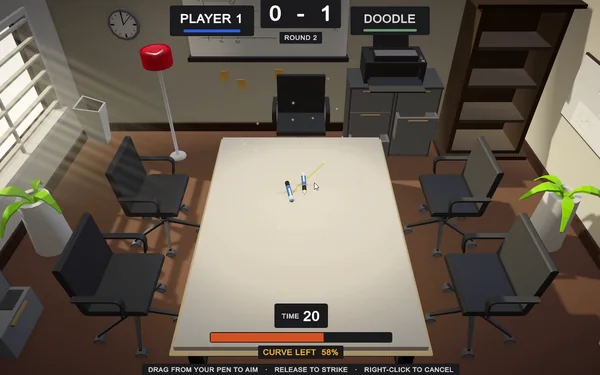
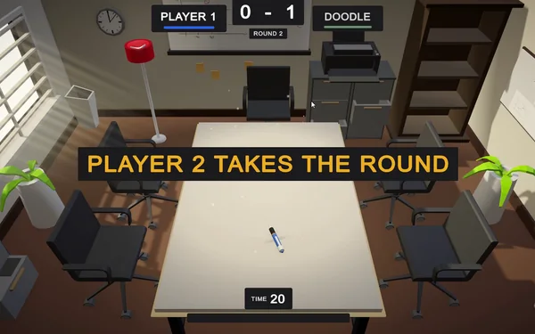

Desk Strike
A turn-based 3D physics duel played on a desk. Two pens face each other; you flick yours at your opponent's, and the first pen knocked off loses the round. Best of three. Built for one-handed mobile play and shipped to CrazyGames.
- Engine
- Unity 6000.3 · URP
- Language
- C#
- Platform
- Mobile web
- Role
- Solo developer
- Status
- Shipped


The pitch
Aim, power and contact point are one gesture. You touch the pen where you want to strike it, drag towards the target, and release. Direction is the aim, drag distance is the power, and where you grabbed it is where it gets hit. There is no second control and no confirm step — which matters, because the whole thing is meant to be played on a phone held in one hand.
Everything after the release is physics. Pens accelerate, slide, spin, transfer momentum and topple off the edge under their own weight. Nothing about a shot is scripted, and a missed shot leaves your pen wherever the simulation put it — usually somewhere worse than where it started.
The design rewrite. The first design document specified a 2–4 player party game with identical pens, three rule-sets, obstacles and chain reactions. What I built is a 1v1 duel with five mechanically distinct pens and no obstacles at all. Every one of those cuts was made because the original spec fought the north star: can I make the perfect shot?
Five pens that actually feel different
The original design insisted every pen be identical "to protect competitive integrity". In practice that made the pen a skin — a cosmetic choice with no consequences. I replaced it with five pens that differ across eight parameters: length, radius, mass, power, curve response, control, grip and bounce.
Each one is authored as a Blender model one unit long, scaled at runtime from the same two numbers that size its collider — so the pen you see cannot disagree with the pen the physics hits.
- Ballpoint — the neutral baseline everything else is measured against.
- Marker — the immovable object. Heavy, high grip, low bounce; hard to shift and hard to aim.
- Fineliner — glass. Travels forever, curves roughly four times as sharply as the Marker, and loses every exchange of momentum.
- Fountain — hits hardest and is the hardest to keep still.
- Pencil — stops exactly where you put it and refuses to be shoved.
Choosing a pen is a commitment made before the match starts, which turns it into the game's only pre-shot strategic layer — and gives progression something to unlock that changes how the game plays rather than how it looks.
The aim line that lied by 63%
While aiming, the player sees the full predicted path of their pen. The original design forbade this — hide the trajectory, "keep it skill-based". I went the other way: hiding the path made the physics feel arbitrary rather than deep. Skill moved from guessing where it goes to choosing where it should go.
That only works if the preview never lies. The prediction re-runs the real integration — Unity's own drag law, Coulomb friction against the desk, the same fixed timestep, the same curve force. Two corrections were bought with debugging time:
- Friction is the average of the pen's material and the desk's, because that is how Unity combines them.
- A pen lying on its side pays that friction at two contacts, not one. Leaving out the factor of two made a 0.7-power ballpoint predict 3.61 m and actually travel 2.35 m.
The third correction was the interesting one. An off-centre strike sets the pen spinning, and a spinning pen's contact patches slide sideways as well as forwards — so less of the desk's grip is left to fight forward travel. It is the curling-stone effect. PhysX models it for free; a point-mass prediction does not.
The symptom: the line was honest about centre strikes and wrong about everything else. Measured before the fix, a fineliner struck at half its length travelled 63% further than the line drew; a ballpoint at full contact, 51% further.
The fix scales predicted friction by how hard a given strike spins that particular
pen — contact point against the control resisting the turn and the mass being
turned — saturating once the contact patch is dominated by rotation. Its constants
are fitted to measured shots, and StrikePredictionTests fires every pen
at three contact points to hold the whole roster to the same tolerance a straight
shot gets.
The rule this left behind: any change to the shot model must change both the simulation and the prediction, or neither.
Splitting the strike into three effects
The gesture produces a StrikeCommand — contact point, direction, power.
The player and the AI both produce exactly this, and it is the only way a pen moves.
The solver then applies three effects separately rather than letting one off-centre
impulse produce all of them:
- Linear impulse at the centre of mass, applied as a velocity change, so a 0.22 kg fineliner and a 0.62 kg marker both launch at a predictable pace.
- Yaw torque scaled by contact point and divided by the pen's control, so it visibly spins the way it was struck, by a known amount.
- A decaying lateral force that bends the path.
Splitting them is what makes the path predictable at all. A single off-centre impulse produces the same effects but compounds them unpredictably — and a path that cannot be predicted cannot be previewed honestly.
Opponents with personalities, not difficulty sliders
Single-player faces five named characters rather than an easy/medium/hard toggle. Each is a set of behaviour weights — accuracy, aggression, power bias, think time, search depth — plus a signature pen. Smudge the Slammer plays a marker at 0.95 aggression; Hairline the Sniper plays a fineliner at 0.90 accuracy. Two opponents of similar skill lose in visibly different ways, so the player learns to read who they are facing rather than how hard it is.
A detail I am pleased with: think time is spent during the settle, not after it. The planner has its answer within a frame, so the pause is characterisation rather than computation — it runs down while the player's own shot is still coming to rest, and only the remainder is ever spent visibly.
Testing a physics game
Physics is supposed to be untestable, and simulating PhysX in a unit test would be pointless. So the suite does not test the simulation. It tests everything around it — the parts where a regression is silent and expensive:
- The prediction against the simulation. Every pen, three contact points, held to one tolerance. This is the test that would have caught the 63% error.
- Strike command validity — clamping the contact point to the pen body, flattening aim onto the desk plane, rejecting a flick too small to be intentional.
- Directional invariants — striking the top end bends right, the bottom end bends left; a harder hit throws further; a knockout throws more than any ordinary hit.
- Design invariants — the opponent ladder must stay sorted by accuracy, so nobody can reorder the roster and silently break the difficulty curve.
- Tutorial flow — a lesson waits for the player rather than a clock; an explanation holds until acknowledged; skipping ends coaching for good.
- Graceful degradation — missing systems are harmless rather than throwing.
The suite runs from an editor menu and regenerates a report at the project root, so the state of the build is a file rather than a memory. It targets design regressions rather than crashes — the class of bug that actually survives to release in a game this small.
Things I deliberately did not build
Cut from the original design: multiple rule-sets, arenas with obstacles, 2–4 player matches, and chain reactions. Each was cut for the same reason — it added a system that competed with the shot for the player's attention. The loop is aim, power, release, physics, knockout or not. Nothing interrupts it. There are no obstacles, no pickups and no per-turn resources.
The desk is 7.5 × 11 units, and a pen is upright-constrained only while it is fully supported. The moment any part passes the edge, rotation is handed back to physics — which does not force a fall. Gravity topples the pen only once its centre of mass clears the lip, exactly as a real pen would. A pen can sit balanced over the edge, and that is a legitimate and very tense board state.